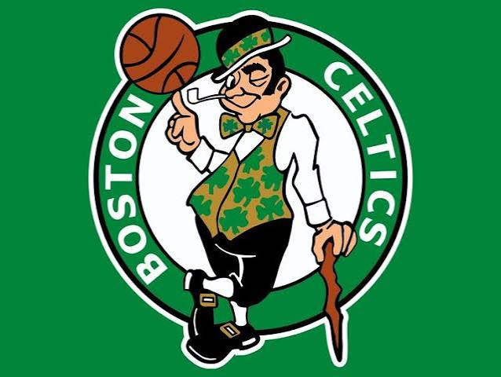
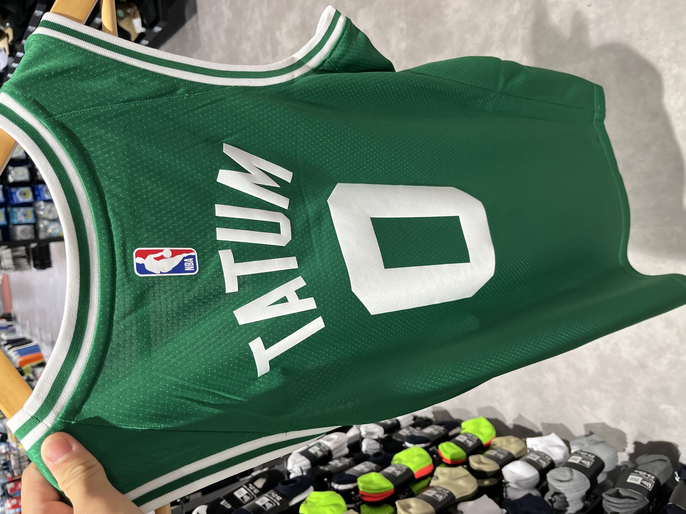
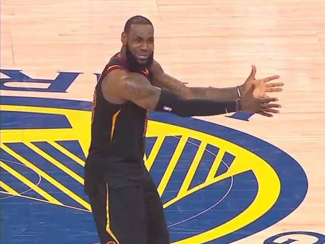
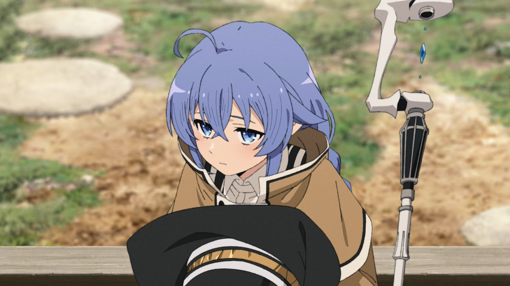
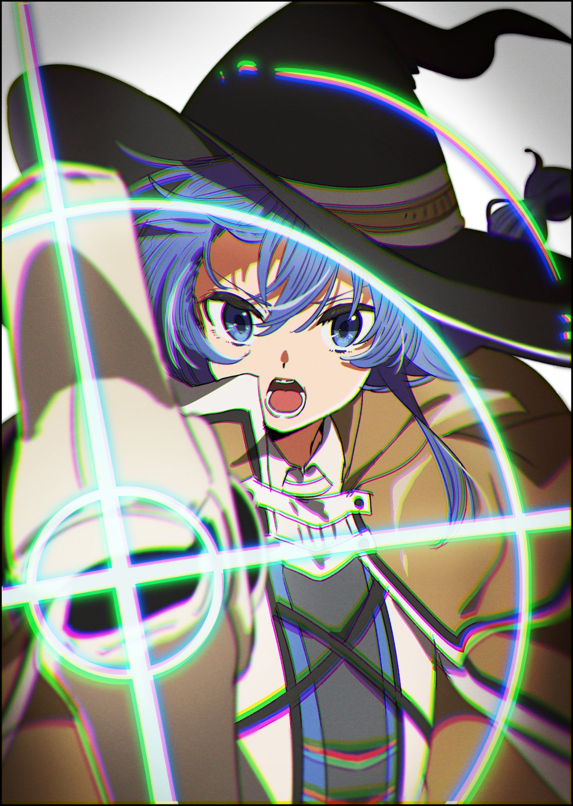
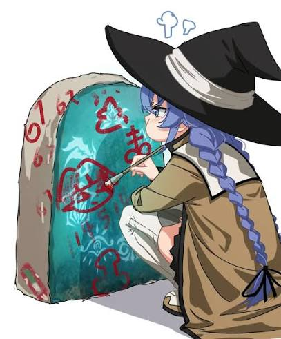

My favourite sport is Basketball, and I follow NBA. My favourite team is the Boston Celtics, and I have a jersey of Jayson Tatum.


But my favourite player, also my GOAT, is LeBron James (it might sound weird hhhh).

Besides Math, Astronomy is one of my interests. I have been attracted to the mystery of deep space since childhood, and I wanted to study Astronomy in college, but I eventually found that Math is my true love. Btw, I believe that the extraterrestrial life exist.
Although I am a math student, I am also interested in History, including Chinese and Japanese. For Chinese history, I am familiar with modern period, the Ming and Qing dynasties, and the Three Kingdoms. And for Japanese, I am just familiar with Sengoku period and moedern period. I am also interested in the modern history of Europe and America.
Moreover, Politics, Sociology and Religion are also among my interests.
My favourite anime is mushoku tensei 無職轉生, and my favourite character is Roxy.


